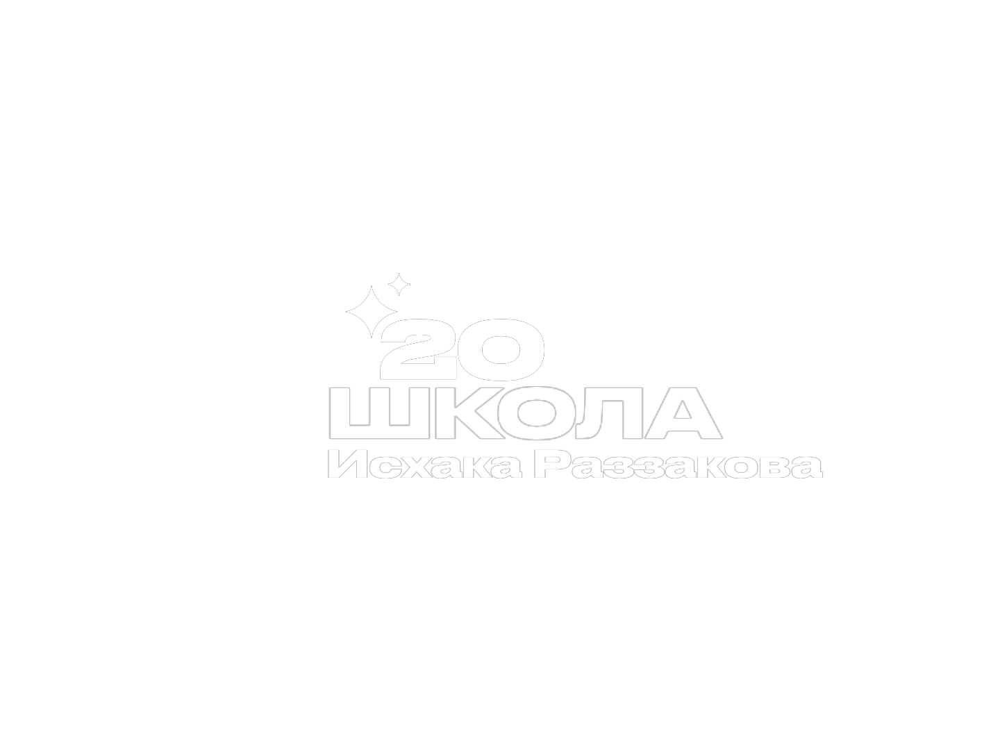

Средняя школа №20 имени Исхака Раззакова - это образовательное учреждение с богатой историей. Наша школа старается предоставлять качественное образование и проводить интересные мероприятия для учеников.
Биография Исхака Раззаковича Раззакова доступна на Википедии.
Средняя школа №20 была основана в начале 20 века и до сих пор является одним из крупнейших учебных заведений города. Мы гордимся нашим обучением, которое включает в себя как теоретические, так и практические дисциплины. Также мы активно развиваем спортивные секции и клубы.
В школе работает высококвалифицированный педагогический состав, который помогает ученикам достигать больших успехов в учёбе. Мы всегда стремимся улучшить учебный процесс, внедряя новые методы обучения и активно участвующие в жизни города.